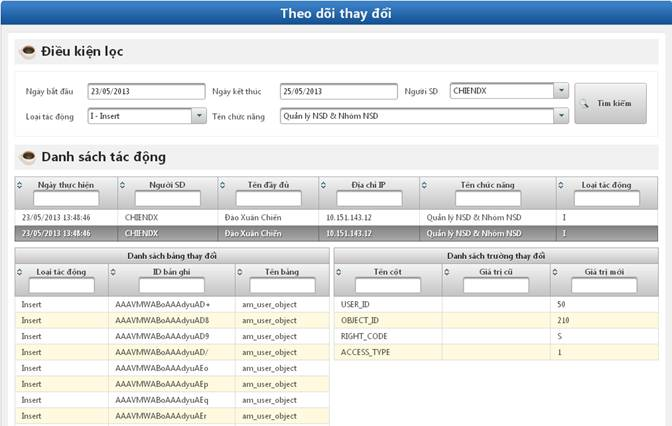

- Mục đích: Cho phép NSD quản lý những thay đổi trong hệ thống.
- Bước 1: Click vào Quản lý thay đổi hệ thống.

Hình 20: Màn hình theo dõi thay đổi
- Bước 2: Thực hiện lọc để tìm kiếm ra các thay đổi:
o Ngày bắt đầu à Ngày kết thúc: Thời gian để tìm kiếm.
o Người sử dụng: Lọc các thay đổi theo NSD.
o Loại tác động: Lọc theo loại tác động vào hệ thống gồm Delete, Insert, Update, Search.
o Tên chức năng: Lọc dữ liệu theo tên chức năng.
- Bước 3: Click vào nút Tìm kiếm. Dữ liệu theo điều kiện lọc được hiển thị trong Danh sách tác động.
- Bước 4: Click vào 1 bản ghi trong Panel Danh sách tác động. Sau đó, click vào nút Xóa để xóa thông tin về tác động làm thay đổi hệ thống.